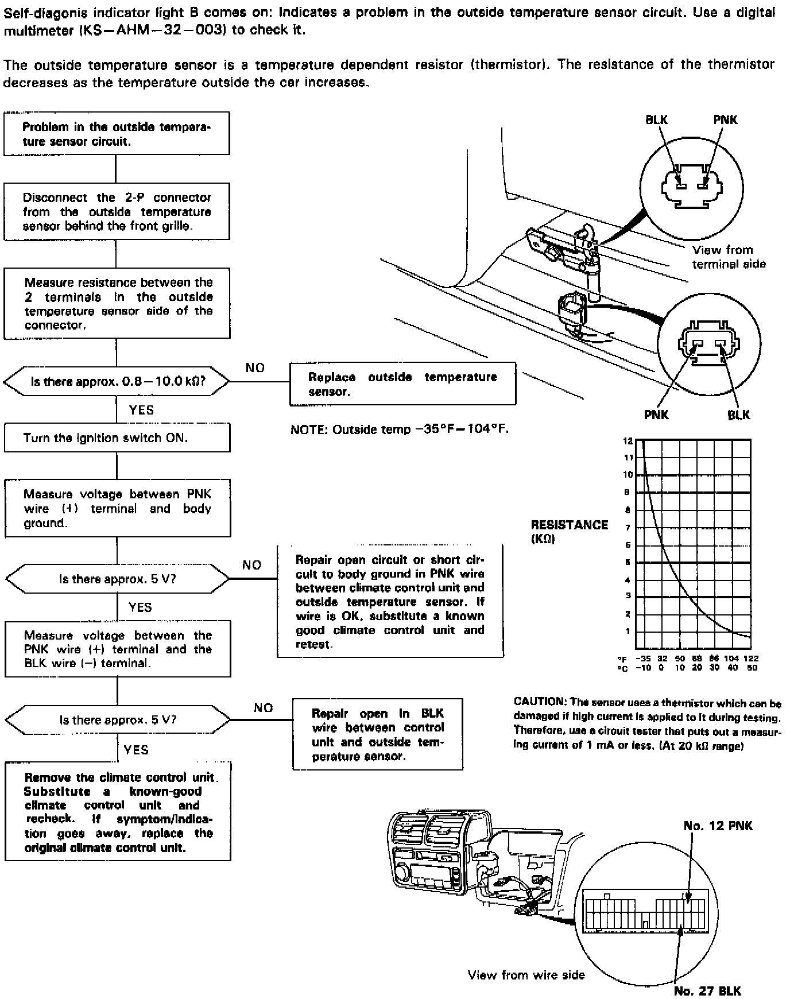

Operation CHARM
: Car repair manuals for everyone.
Home
>>
Acura
>>
1992
>>
Legend Sedan V6-3206cc 3.2L SOHC FI
>>
Repair and Diagnosis
>>
Sensors and Switches
>>
Sensors and Switches - HVAC
>>
Ambient Temperature Sensor / Switch HVAC
>>
Testing and Inspection
>>
Diagnostic Flowchart
Diagnostic Flowchart
Outside Air Temperature Sensor:
